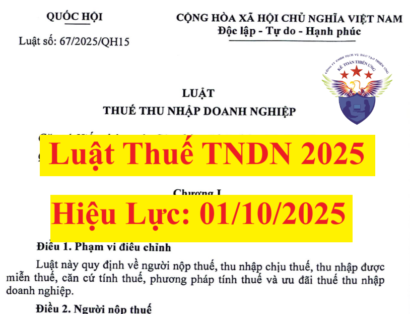

Ngày 14/6/2025, Quốc hội thông qua Luật Thuế thu nhập doanh nghiệp số 67/2025/QH15. Luật này có hiệu lực thi hành từ ngày 01 tháng 10 năm 2025 và áp dụng từ kỳ tính thuế thu nhập doanh nghiệp năm 2025.
Chi tiết nội dung toàn văn bản Luật Thuế TNDN 2025 như sau:
LUẬT THUẾ THU NHẬP DOANH NGHIỆP Quốc hội ban hành Luật Thuế thu nhập doanh nghiệp. Chương I NHỮNG QUY ĐỊNH CHUNG Luật này quy định về người nộp thuế, thu nhập chịu thuế, thu nhập được miễn thuế, căn cứ tính thuế, phương pháp tính thuế và ưu đãi thuế thu nhập doanh nghiệp. Điều 2. Người nộp thuế 1. Người nộp thuế thu nhập doanh nghiệp là tổ chức hoạt động sản xuất, kinh doanh hàng hóa, dịch vụ có thu nhập chịu thuế theo quy định của Luật này (sau đây gọi là doanh nghiệp), bao gồm: a) Doanh nghiệp được thành lập theo quy định của pháp luật Việt Nam; b) Doanh nghiệp được thành lập theo quy định của pháp luật nước ngoài (sau đây gọi là doanh nghiệp nước ngoài) có cơ sở thường trú hoặc không có cơ sở thường trú tại Việt Nam; c) Hợp tác xã, liên hiệp hợp tác xã được thành lập theo quy định của Luật Hợp tác xã; d) Đơn vị sự nghiệp được thành lập theo quy định của pháp luật Việt Nam; đ) Tổ chức khác có hoạt động sản xuất, kinh doanh có thu nhập. 2. Doanh nghiệp có thu nhập chịu thuế quy định tại Điều 3 của Luật này phải nộp thuế thu nhập doanh nghiệp như sau: a) Doanh nghiệp được thành lập theo quy định của pháp luật Việt Nam nộp thuế đối với thu nhập chịu thuế phát sinh tại Việt Nam và thu nhập chịu thuế phát sinh ngoài Việt Nam; b) Doanh nghiệp nước ngoài có cơ sở thường trú tại Việt Nam nộp thuế đối với thu nhập chịu thuế phát sinh tại Việt Nam và thu nhập chịu thuế phát sinh ngoài Việt Nam liên quan đến hoạt động của cơ sở thường trú đó; c) Doanh nghiệp nước ngoài có cơ sở thường trú tại Việt Nam nộp thuế đối với thu nhập chịu thuế phát sinh tại Việt Nam mà khoản thu nhập này không liên quan đến hoạt động của cơ sở thường trú; d) Doanh nghiệp nước ngoài không có cơ sở thường trú tại Việt Nam, bao gồm cả các doanh nghiệp kinh doanh thương mại điện tử, kinh doanh dựa trên nền tảng số, nộp thuế đối với thu nhập chịu thuế phát sinh tại Việt Nam. 3. Cơ sở thường trú của doanh nghiệp nước ngoài là cơ sở sản xuất, kinh doanh mà thông qua cơ sở này, doanh nghiệp nước ngoài tiến hành một phần hoặc toàn bộ hoạt động sản xuất, kinh doanh tại Việt Nam, bao gồm: a) Chi nhánh, văn phòng điều hành, nhà máy, công xưởng, phương tiện vận tải, mỏ dầu, mỏ khí, mỏ hoặc địa điểm khai thác tài nguyên thiên nhiên khác tại Việt Nam; b) Địa điểm xây dựng, công trình xây dựng, lắp đặt, lắp ráp; c) Cơ sở cung cấp dịch vụ, bao gồm cả dịch vụ tư vấn thông qua người làm công hoặc tổ chức, cá nhân khác; d) Đại lý cho doanh nghiệp nước ngoài; đ) Đại diện tại Việt Nam trong trường hợp là đại diện có thẩm quyền ký kết hợp đồng đứng tên doanh nghiệp nước ngoài hoặc đại diện không có thẩm quyền ký kết hợp đồng đứng tên doanh nghiệp nước ngoài nhưng thường xuyên thực hiện việc giao hàng hóa hoặc cung ứng dịch vụ tại Việt Nam; e) Nền tảng thương mại điện tử, nền tảng số mà thông qua đó doanh nghiệp nước ngoài tiến hành cung cấp hàng hóa, dịch vụ tại Việt Nam. 4. Chính phủ quy định chi tiết Điều này. Điều 3. Thu nhập chịu thuế 1. Thu nhập chịu thuế thu nhập doanh nghiệp bao gồm thu nhập từ hoạt động sản xuất, kinh doanh hàng hóa, dịch vụ và thu nhập khác quy định tại khoản 2 Điều này. 2. Thu nhập khác bao gồm: a) Thu nhập từ chuyển nhượng vốn, chuyển nhượng quyền góp vốn, chuyển nhượng chứng khoán; b) Thu nhập từ chuyển nhượng bất động sản, trừ thu nhập từ chuyển nhượng bất động sản của doanh nghiệp kinh doanh bất động sản; c) Thu nhập từ chuyển nhượng dự án đầu tư, chuyển nhượng quyền tham gia dự án đầu tư, chuyển nhượng quyền thăm dò, khai thác, chế biến khoáng sản; d) Thu nhập từ chuyển nhượng, cho thuê, thanh lý tài sản, trong đó có các loại giấy tờ có giá, trừ bất động sản; đ) Thu nhập từ quyền sử dụng, quyền sở hữu tài sản, bao gồm cả thu nhập từ quyền sở hữu trí tuệ, chuyển giao công nghệ; e) Thu nhập từ lãi tiền gửi, lãi cho vay vốn, bán ngoại tệ, trừ thu nhập từ hoạt động tín dụng của tổ chức tín dụng; g) Khoản trích trước vào chi phí nhưng không sử dụng hoặc sử dụng không hết mà doanh nghiệp không hạch toán điều chỉnh giảm chi phí được trừ; khoản nợ khó đòi đã xóa nay đòi được; khoản nợ phải trả không xác định được chủ nợ; khoản thu nhập từ kinh doanh của những năm trước bị bỏ sót nay phát hiện ra; h) Chênh lệch giữa thu về tiền phạt, tiền bồi thường do vi phạm hợp đồng kinh tế hoặc thưởng do thực hiện tốt cam kết theo hợp đồng; i) Các khoản tài trợ, tặng cho bằng tiền hoặc hiện vật nhận được; k) Chênh lệch do đánh giá lại tài sản theo quy định của pháp luật để góp vốn, điều chuyển khi sáp nhập, hợp nhất, chia, tách, chuyển đổi chủ sở hữu, chuyển đổi loại hình doanh nghiệp; l) Thu nhập từ hợp đồng hợp tác kinh doanh; m) Thu nhập từ hoạt động sản xuất, kinh doanh ở nước ngoài; n) Thu nhập của đơn vị sự nghiệp công lập đối với các hoạt động cho thuê tài sản công; o) Các khoản thu nhập khác, trừ các khoản thu nhập được miễn thuế quy định tại Điều 4 của Luật này. 3. Thu nhập chịu thuế phát sinh tại Việt Nam của doanh nghiệp nước ngoài quy định tại điểm c, điểm d khoản 2 Điều 2 của Luật này là thu nhập nhận được có nguồn gốc từ Việt Nam, không phụ thuộc vào địa điểm tiến hành kinh doanh. 4. Doanh nghiệp Việt Nam đầu tư ở nước ngoài có phát sinh thu nhập từ hoạt động sản xuất, kinh doanh tại nước ngoài trong kỳ tính thuế được trừ số thuế thu nhập doanh nghiệp phải nộp theo quy định của nước tiếp nhận đầu tư vào số thuế thu nhập doanh nghiệp phải nộp ở Việt Nam, nhưng không được vượt quá số thuế thu nhập doanh nghiệp tính theo quy định của pháp luật về thuế thu nhập doanh nghiệp của Việt Nam. 5. Doanh nghiệp phải nộp thuế thu nhập doanh nghiệp bổ sung về tổng hợp thu nhập chịu thuế tối thiểu (IIR) theo quy định của pháp luật thì thuế thu nhập doanh nghiệp bổ sung phải nộp được trừ vào số thuế thu nhập doanh nghiệp phải nộp tại Việt Nam theo quy định của Luật này. 6. Chính phủ quy định chi tiết Điều này. Điều 4. Thu nhập được miễn thuế 1. Thu nhập từ hoạt động đánh bắt hải sản; thu nhập của doanh nghiệp từ sản xuất sản phẩm cây trồng, rừng trồng, chăn nuôi, thủy sản nuôi trồng, chế biến nông sản, thủy sản (kể cả trường hợp mua sản phẩm nông sản, thủy sản về chế biến) ở địa bàn có điều kiện kinh tế - xã hội đặc biệt khó khăn; thu nhập của hợp tác xã, liên hiệp hợp tác xã từ sản xuất sản phẩm cây trồng, rừng trồng, chăn nuôi, thủy sản nuôi trồng, chế biến nông sản, thủy sản (kể cả trường hợp mua sản phẩm nông sản, thủy sản về chế biến), sản xuất muối. 2. Thu nhập của hợp tác xã, liên hiệp hợp tác xã hoạt động trong lĩnh vực nông nghiệp, lâm nghiệp, ngư nghiệp, diêm nghiệp ở địa bàn có điều kiện kinh tế - xã hội khó khăn hoặc ở địa bàn có điều kiện kinh tế - xã hội đặc biệt khó khăn. 3. Thu nhập từ việc thực hiện dịch vụ kỹ thuật trực tiếp phục vụ nông nghiệp. 4. Thu nhập từ việc thực hiện hợp đồng nghiên cứu khoa học, phát triển công nghệ và đổi mới sáng tạo, chuyển đổi số; thu nhập từ bán sản phẩm làm ra từ công nghệ mới lần đầu tiên áp dụng ở Việt Nam; thu nhập từ bán sản phẩm sản xuất thử nghiệm trong thời gian sản xuất thử nghiệm bao gồm cả sản xuất thử nghiệm có kiểm soát theo quy định của pháp luật. Thu nhập tại khoản này được miễn thuế tối đa không quá 03 năm. 5. Thu nhập từ hoạt động sản xuất, kinh doanh hàng hóa, dịch vụ của doanh nghiệp có từ 30% số lao động bình quân trong năm trở lên là người khuyết tật, người sau cai nghiện ma túy, người nhiễm vi rút gây ra hội chứng suy giảm miễn dịch mắc phải ở người (HIV/AIDS) và có số lao động bình quân trong năm từ 20 người trở lên, không bao gồm doanh nghiệp hoạt động trong lĩnh vực tài chính, kinh doanh bất động sản. 6. Thu nhập từ hoạt động giáo dục nghề nghiệp, đào tạo nghề nghiệp dành riêng cho người dân tộc thiểu số, người khuyết tật, trẻ em có hoàn cảnh đặc biệt, đối tượng tệ nạn xã hội. 7. Thu nhập được chia từ hoạt động góp vốn, mua cổ phần, liên doanh, liên kết với doanh nghiệp trong nước, sau khi đã nộp thuế thu nhập doanh nghiệp theo quy định của Luật này, kể cả trường hợp bên nhận góp vốn, phát hành cổ phiếu, bên liên doanh, liên kết được hưởng ưu đãi thuế thu nhập doanh nghiệp. 8. Khoản tài trợ nhận được để sử dụng cho hoạt động giáo dục, văn hóa, nghệ thuật, từ thiện, nhân đạo và hoạt động xã hội khác tại Việt Nam; khoản tài trợ nhận được từ doanh nghiệp không có quan hệ liên kết, tổ chức, cá nhân trong nước và ngoài nước để sử dụng cho hoạt động nghiên cứu khoa học, phát triển công nghệ và đổi mới sáng tạo, chuyển đổi số; khoản hỗ trợ trực tiếp từ ngân sách nhà nước và từ Quỹ hỗ trợ đầu tư do Chính phủ thành lập; khoản bồi thường của Nhà nước theo quy định của pháp luật. Trường hợp khoản tài trợ nhận được tại khoản này mà doanh nghiệp sử dụng không đúng mục đích thì bị truy thu thuế và xử phạt vi phạm theo quy định của pháp luật. 9. Khoản chênh lệch do đánh giá lại tài sản theo quy định của pháp luật để cổ phần hóa, sắp xếp lại doanh nghiệp do Nhà nước nắm giữ 100% vốn điều lệ. 10. Thu nhập từ chuyển nhượng chứng chỉ giảm phát thải, chuyển nhượng tín chỉ các-bon lần đầu sau khi phát hành của doanh nghiệp được cấp chứng chỉ giảm phát thải, tín chỉ các-bon; thu nhập từ tiền lãi trái phiếu xanh; thu nhập từ chuyển nhượng trái phiếu xanh lần đầu sau khi phát hành. 11. Thu nhập (bao gồm cả lãi tiền gửi ngân hàng, lãi trái phiếu Chính phủ, lãi tín phiếu kho bạc) từ thực hiện nhiệm vụ Nhà nước giao trong các trường hợp sau đây: a) Thu nhập của Ngân hàng Phát triển Việt Nam trong hoạt động tín dụng đầu tư phát triển, tín dụng xuất khẩu; b) Thu nhập của Ngân hàng Chính sách xã hội từ hoạt động tín dụng cho người nghèo và các đối tượng chính sách khác; c) Thu nhập của Công ty trách nhiệm hữu hạn một thành viên quản lý tài sản của các tổ chức tín dụng Việt Nam; d) Thu nhập từ hoạt động có thu của các quỹ tài chính nhà nước và quỹ, tổ chức khác của Nhà nước hoạt động không vì mục tiêu lợi nhuận do Chính phủ, Thủ tướng Chính phủ quy định hoặc quyết định. 12. Phần thu nhập không chia của cơ sở thực hiện xã hội hóa trong lĩnh vực giáo dục - đào tạo, y tế và lĩnh vực xã hội hóa khác để lại để đầu tư phát triển cơ sở đó đáp ứng tỷ lệ tối thiểu do Chính phủ quy định; phần thu nhập hình thành quỹ chung không chia, tài sản chung không chia của hợp tác xã, liên hiệp hợp tác xã được thành lập và hoạt động theo quy định của pháp luật về hợp tác xã. 13. Thu nhập từ chuyển giao công nghệ thuộc lĩnh vực ưu tiên chuyển giao công nghệ cho tổ chức, cá nhân ở địa bàn có điều kiện kinh tế - xã hội đặc biệt khó khăn. 14. Thu nhập của đơn vị sự nghiệp công lập từ cung cấp dịch vụ sự nghiệp công, bao gồm: a) Dịch vụ sự nghiệp công cơ bản, thiết yếu thuộc danh mục dịch vụ sự nghiệp công sử dụng ngân sách nhà nước do cơ quan có thẩm quyền ban hành; b) Dịch vụ sự nghiệp công mà Nhà nước phải hỗ trợ, đảm bảo kinh phí hoạt động do chưa tính đủ chi phí cung cấp dịch vụ trong giá dịch vụ; c) Dịch vụ sự nghiệp công tại địa bàn có điều kiện kinh tế - xã hội đặc biệt khó khăn. 15. Chính phủ quy định chi tiết Điều này. Điều 5. Kỳ tính thuế 1. Kỳ tính thuế thu nhập doanh nghiệp được xác định theo năm dương lịch hoặc năm tài chính do doanh nghiệp lựa chọn, trừ trường hợp quy định tại khoản 2 Điều này. Trường hợp doanh nghiệp lựa chọn năm tài chính khác với năm dương lịch thì thông báo với cơ quan thuế quản lý trực tiếp trước khi thực hiện. 2. Kỳ tính thuế đối với doanh nghiệp quy định tại điểm c, điểm d khoản 2 Điều 2 của Luật này thực hiện theo quy định của pháp luật về quản lý thuế. Chương II CĂN CỨ VÀ PHƯƠNG PHÁP TÍNH THUẾ Căn cứ tính thuế là thu nhập tính thuế và thuế suất. Điều 7. Xác định thu nhập tính thuế 1. Thu nhập tính thuế trong kỳ tính thuế được xác định như sau:
2. Thu nhập chịu thuế quy định tại khoản 1 Điều này được xác định như sau:
3. Doanh nghiệp có nhiều hoạt động sản xuất, kinh doanh trong kỳ tính thuế thì thu nhập chịu thuế từ hoạt động sản xuất, kinh doanh là tổng thu nhập của tất cả các hoạt động sản xuất, kinh doanh. Trường hợp có hoạt động sản xuất, kinh doanh bị lỗ thì được bù trừ số lỗ vào thu nhập chịu thuế của các hoạt động sản xuất, kinh doanh có thu nhập do doanh nghiệp tự lựa chọn (trừ thu nhập từ hoạt động chuyển nhượng bất động sản, chuyển nhượng dự án đầu tư, chuyển nhượng quyền tham gia dự án đầu tư không bù trừ với thu nhập của hoạt động sản xuất, kinh doanh đang được hưởng ưu đãi thuế). Phần thu nhập còn lại sau khi bù trừ áp dụng mức thuế suất thuế thu nhập doanh nghiệp của hoạt động sản xuất, kinh doanh còn thu nhập. 4. Thu nhập chịu thuế từ hoạt động chuyển nhượng dự án đầu tư thăm dò, khai thác, chế biến khoáng sản; chuyển nhượng quyền tham gia dự án đầu tư thăm dò, khai thác, chế biến khoáng sản; chuyển nhượng quyền thăm dò, khai thác, chế biến khoáng sản phải xác định riêng để kê khai nộp thuế, không được bù trừ lỗ, lãi với hoạt động sản xuất, kinh doanh trong kỳ tính thuế. Điều 8. Doanh thu 1. Doanh thu để tính thu nhập chịu thuế là toàn bộ tiền bán hàng, tiền gia công, tiền cung ứng dịch vụ kể cả trợ giá, phụ thu, phụ trội mà doanh nghiệp được hưởng, không phân biệt đã thu được tiền hay chưa thu được tiền. 2. Chính phủ quy định chi tiết Điều này. Điều 9. Các khoản chi được trừ và không được trừ khi xác định thu nhập chịu thuế 1. Trừ các khoản chi quy định tại khoản 2 Điều này, doanh nghiệp được trừ các khoản chi khi xác định thu nhập chịu thuế nếu đáp ứng đủ các điều kiện sau đây: a) Khoản chi thực tế phát sinh liên quan đến hoạt động sản xuất, kinh doanh của doanh nghiệp, bao gồm cả khoản chi phí bổ sung được trừ theo tỷ lệ phần trăm tính trên chi phí thực tế phát sinh trong kỳ tính thuế liên quan đến hoạt động nghiên cứu và phát triển của doanh nghiệp; b) Khoản chi thực tế phát sinh khác, bao gồm: b1) Khoản chi cho thực hiện nhiệm vụ giáo dục quốc phòng và an ninh, huấn luyện, hoạt động của lực lượng dân quân tự vệ và phục vụ các nhiệm vụ quốc phòng, an ninh khác theo quy định của pháp luật; b2) Khoản chi hỗ trợ phục vụ cho hoạt động của tổ chức đảng, tổ chức chính trị - xã hội trong doanh nghiệp; b3) Khoản chi cho hoạt động giáo dục nghề nghiệp, đào tạo nghề nghiệp cho người lao động theo quy định của pháp luật; b4) Khoản chi thực tế cho hoạt động phòng, chống HIV/AIDS nơi làm việc của doanh nghiệp; b5) Khoản tài trợ cho giáo dục, y tế, văn hóa; khoản tài trợ cho phòng, chống, khắc phục hậu quả thiên tai, dịch bệnh, làm nhà đại đoàn kết, nhà tình nghĩa, nhà cho các đối tượng chính sách theo quy định của pháp luật; khoản tài trợ theo quy định của Chính phủ, Thủ tướng Chính phủ dành cho các địa phương thuộc địa bàn có điều kiện kinh tế - xã hội đặc biệt khó khăn; khoản tài trợ cho nghiên cứu khoa học, phát triển công nghệ và đổi mới sáng tạo, chuyển đổi số; b6) Khoản chi cho nghiên cứu khoa học, phát triển công nghệ và đổi mới sáng tạo, chuyển đổi số; b7) Phần giá trị tổn thất do thiên tai, dịch bệnh và trường hợp bất khả kháng khác không được bồi thường; b8) Khoản chi thực tế cho người được biệt phái tham gia quản trị, điều hành, kiểm soát tổ chức tín dụng được kiểm soát đặc biệt, ngân hàng thương mại được chuyển giao bắt buộc theo quy định của Luật Các tổ chức tín dụng; b9) Một số khoản chi phục vụ sản xuất, kinh doanh của doanh nghiệp nhưng chưa tương ứng với doanh thu phát sinh trong kỳ theo quy định của Chính phủ; b10) Một số khoản chi hỗ trợ xây dựng công trình công cộng, đồng thời phục vụ hoạt động sản xuất, kinh doanh của doanh nghiệp; b11) Chi phí liên quan đến việc giảm phát thải khí nhà kính nhằm trung hòa các-bon và net zero, giảm ô nhiễm môi trường, đồng thời liên quan đến hoạt động sản xuất, kinh doanh của doanh nghiệp; b12) Một số khoản đóng góp vào các quỹ được thành lập theo quyết định của Thủ tướng Chính phủ và quy định của Chính phủ; c) Các khoản chi có đủ hoá đơn, chứng từ thanh toán không dùng tiền mặt theo quy định của pháp luật, trừ các trường hợp đặc thù theo quy định của Chính phủ. 2. Các khoản chi không được trừ khi xác định thu nhập chịu thuế bao gồm: a) Khoản chi không đáp ứng đủ các điều kiện quy định tại khoản 1 Điều này; b) Khoản tiền phạt do vi phạm hành chính; c) Khoản chi được bù đắp bằng nguồn kinh phí khác; d) Phần chi vượt mức do Chính phủ quy định đối với: chi phí quản lý kinh doanh do doanh nghiệp nước ngoài phân bổ cho cơ sở thường trú tại Việt Nam; chi phí thuê quản lý hoạt động kinh doanh trò chơi điện tử có thưởng, kinh doanh casino; chi trả lãi tiền vay của doanh nghiệp có giao dịch liên kết; chi có tính chất phúc lợi trực tiếp cho người lao động; khoản đóng góp tham gia bảo hiểm hưu trí bổ sung theo quy định của Luật Bảo hiểm xã hội hoặc quỹ có tính chất an sinh xã hội, mua bảo hiểm hưu trí tự nguyện, bảo hiểm nhân thọ cho người lao động; đ) Phần trích lập không đúng hoặc vượt mức theo quy định của pháp luật về trích lập dự phòng; e) Khoản trích khấu hao tài sản cố định không đúng hoặc vượt mức quy định của pháp luật; g) Khoản trích trước vào chi phí không đúng quy định của pháp luật; h) Tiền lương, tiền công của chủ doanh nghiệp tư nhân, chủ công ty trách nhiệm hữu hạn một thành viên do cá nhân làm chủ; thù lao trả cho sáng lập viên doanh nghiệp không trực tiếp tham gia điều hành sản xuất, kinh doanh; tiền lương, tiền công, các khoản hạch toán chi khác để chi trả cho người lao động nhưng thực tế không chi trả hoặc không có hoá đơn, chứng từ theo quy định của pháp luật; i) Phần chi trả lãi tiền vay tương ứng với phần vốn điều lệ còn thiếu; lãi tiền vay trong quá trình đầu tư đã được ghi nhận vào giá trị đầu tư; lãi vay để triển khai thực hiện các hợp đồng tìm kiếm, thăm dò và khai thác dầu khí; phần chi trả lãi tiền vay vốn sản xuất, kinh doanh của đối tượng không phải là tổ chức tín dụng vượt mức theo quy định của Bộ luật Dân sự; k) Phần chi phí được phép thu hồi vượt quá tỷ lệ quy định tại hợp đồng dầu khí được duyệt; trường hợp hợp đồng dầu khí không quy định về tỷ lệ thu hồi chi phí thì phần chi phí vượt trên mức do Chính phủ quy định không được tính vào chi phí được trừ; l) Phần thuế giá trị gia tăng đầu vào đã được khấu trừ; thuế giá trị gia tăng nộp theo phương pháp khấu trừ; thuế giá trị gia tăng đầu vào của phần giá trị xe ô tô chở người từ 09 chỗ ngồi trở xuống vượt mức do Chính phủ quy định; thuế thu nhập doanh nghiệp; các khoản thuế, phí, lệ phí, thu khác không được tính vào chi phí theo quy định của pháp luật và tiền chậm nộp theo quy định của pháp luật về quản lý thuế. Phần thuế giá trị gia tăng nộp theo phương pháp khấu trừ quy định tại điểm này không bao gồm phần thuế giá trị gia tăng của hàng hóa, dịch vụ đầu vào có liên quan trực tiếp đến sản xuất, kinh doanh của doanh nghiệp chưa được khấu trừ hết nhưng không thuộc trường hợp hoàn thuế. Số thuế giá trị gia tăng đầu vào khi đã được tính vào chi phí được trừ thì không được khấu trừ với số thuế giá trị gia tăng đầu ra; m) Khoản chi không tương ứng với doanh thu tính thuế, trừ các khoản chi quy định tại điểm b khoản 1 Điều này; khoản chi không đáp ứng điều kiện chi, nội dung chi theo quy định của pháp luật chuyên ngành; n) Khoản tài trợ, trừ khoản tài trợ quy định tại tiểu điểm b5 điểm b khoản 1 Điều này; o) Chi về đầu tư xây dựng cơ bản trong giai đoạn đầu tư để hình thành tài sản cố định; chi liên quan trực tiếp đến việc tăng, giảm vốn chủ sở hữu của doanh nghiệp; p) Các khoản chi của hoạt động kinh doanh: ngân hàng, bảo hiểm, xổ số, chứng khoán, hợp đồng BT, BOT, BTO không đúng hoặc vượt mức quy định của pháp luật; q) Các khoản chi khác. 3. Chính phủ quy định chi tiết Điều này, bao gồm cả mức chi bổ sung, điều kiện, thời gian và phạm vi áp dụng đối với khoản chi cho hoạt động nghiên cứu và phát triển của doanh nghiệp quy định tại điểm a khoản 1 Điều này. Bộ Tài chính quy định hồ sơ của khoản chi được tính vào chi phí được trừ quy định tại điểm b, điểm c khoản 1 Điều này. Điều 10. Thuế suất 1. Thuế suất thuế thu nhập doanh nghiệp là 20%, trừ trường hợp quy định tại các khoản 2, 3 và 4 Điều này và đối tượng được ưu đãi về thuế suất quy định tại Điều 13 của Luật này. 2. Thuế suất 15% áp dụng đối với doanh nghiệp có tổng doanh thu năm không quá 03 tỷ đồng. 3. Thuế suất 17% áp dụng đối với doanh nghiệp có tổng doanh thu năm từ trên 03 tỷ đồng đến không quá 50 tỷ đồng. Doanh thu làm căn cứ xác định doanh nghiệp thuộc đối tượng được áp dụng thuế suất 15% và 17% quy định tại khoản 2, khoản 3 Điều này là tổng doanh thu của kỳ tính thuế thu nhập doanh nghiệp trước liền kề. Việc xác định tổng doanh thu làm căn cứ áp dụng thực hiện theo quy định của Chính phủ. 4. Thuế suất thuế thu nhập doanh nghiệp đối với một số trường hợp khác được quy định như sau: a) Đối với hoạt động tìm kiếm, thăm dò và khai thác dầu khí từ 25% đến 50%. Căn cứ vào vị trí, điều kiện khai thác và trữ lượng mỏ, Thủ tướng Chính phủ quyết định mức thuế suất cụ thể phù hợp với từng hợp đồng dầu khí; b) Đối với hoạt động thăm dò, khai thác tài nguyên quý hiếm (bao gồm: bạch kim, vàng, bạc, thiếc, wonfram, antimoan, đá quý, đất hiếm và tài nguyên quý hiếm khác theo quy định của pháp luật) là 50%. Trường hợp các mỏ có từ 70% diện tích được giao trở lên ở địa bàn có điều kiện kinh tế - xã hội đặc biệt khó khăn, thuế suất là 40%. Điều 11. Phương pháp tính thuế 1. Số thuế thu nhập doanh nghiệp phải nộp trong kỳ tính thuế được tính bằng thu nhập tính thuế nhân với thuế suất, trừ trường hợp quy định tại khoản 2 Điều này. 2. Chính phủ quy định số thuế thu nhập doanh nghiệp phải nộp tính theo tỷ lệ % trên doanh thu đối với các trường hợp sau đây: a) Doanh nghiệp quy định tại điểm c, điểm d khoản 2 Điều 2 của Luật này; đối tượng thực hiện nghĩa vụ kê khai, nộp thuế, thời điểm và cách xác định doanh thu tính thu nhập chịu thuế phát sinh tại Việt Nam; b) Doanh nghiệp có tổng doanh thu năm không quá 03 tỷ đồng quy định tại khoản 2 Điều 10 của Luật này trong trường hợp xác định được doanh thu nhưng không xác định được chi phí, thu nhập của hoạt động sản xuất, kinh doanh; c) Hợp tác xã, liên hiệp hợp tác xã, đơn vị sự nghiệp và tổ chức khác quy định tại các điểm c, d và đ khoản 1 Điều 2 của Luật này có hoạt động sản xuất, kinh doanh hàng hoá, dịch vụ có thu nhập chịu thuế thu nhập doanh nghiệp (trừ thu nhập được miễn thuế quy định tại Điều 4 của Luật này) mà các đơn vị này hạch toán được doanh thu nhưng không xác định được chi phí, thu nhập của hoạt động sản xuất, kinh doanh. Chương III ƯU ĐÃI THUẾ THU NHẬP DOANH NGHIỆP 1. Doanh nghiệp được hưởng ưu đãi thuế thu nhập doanh nghiệp theo ngành, nghề ưu đãi thuế thu nhập doanh nghiệp, địa bàn ưu đãi thuế thu nhập doanh nghiệp quy định tại Điều này. Mức ưu đãi thuế thu nhập doanh nghiệp thực hiện theo quy định tại Điều 13, Điều 14 của Luật này. Trường hợp luật khác có quy định về ưu đãi thuế thu nhập doanh nghiệp khác với quy định của Luật này thì thực hiện theo quy định của Luật này, trừ Luật Thủ đô và các nghị quyết quy định cơ chế, chính sách đặc biệt, đặc thù của Quốc hội. Trong cùng một thời gian, nếu doanh nghiệp được hưởng nhiều mức ưu đãi thuế khác nhau theo quy định của Luật này đối với cùng một khoản thu nhập thì doanh nghiệp được lựa chọn áp dụng mức ưu đãi thuế có lợi nhất. 2. Ngành, nghề ưu đãi thuế thu nhập doanh nghiệp bao gồm: a) Ứng dụng công nghệ cao, đầu tư mạo hiểm cho phát triển công nghệ cao thuộc danh mục công nghệ cao được ưu tiên đầu tư phát triển theo quy định của Luật Công nghệ cao; ứng dụng công nghệ chiến lược theo quy định của pháp luật; ươm tạo công nghệ cao, ươm tạo doanh nghiệp công nghệ cao; đầu tư xây dựng - kinh doanh cơ sở ươm tạo công nghệ cao, ươm tạo doanh nghiệp công nghệ cao; b) Sản xuất sản phẩm phần mềm; sản xuất sản phẩm an toàn thông tin mạng và cung cấp dịch vụ an toàn thông tin mạng đảm bảo các điều kiện theo quy định của pháp luật về an toàn thông tin mạng; sản xuất sản phẩm, cung cấp dịch vụ công nghệ số trọng điểm, sản xuất thiết bị điện tử theo quy định của pháp luật về công nghiệp công nghệ số; nghiên cứu và phát triển, thiết kế, sản xuất, đóng gói, kiểm thử sản phẩm chip bán dẫn; xây dựng trung tâm dữ liệu trí tuệ nhân tạo; c) Sản xuất sản phẩm công nghiệp hỗ trợ thuộc Danh mục sản phẩm công nghiệp hỗ trợ ưu tiên phát triển do Chính phủ quy định đáp ứng một trong các tiêu chí sau đây: c1) Sản phẩm công nghiệp hỗ trợ cho công nghệ cao theo quy định của Luật Công nghệ cao; c2) Sản phẩm công nghiệp hỗ trợ cho sản xuất sản phẩm các ngành dệt - may, da - giầy, điện tử - tin học (bao gồm cả thiết kế, sản xuất bán dẫn), sản xuất, lắp ráp ô tô, cơ khí chế tạo đến ngày Luật này có hiệu lực thi hành mà trong nước chưa sản xuất được hoặc đã sản xuất được nhưng phải đáp ứng tiêu chuẩn kỹ thuật của Liên minh Châu Âu hoặc tương đương (nếu có) theo quy định của Bộ trưởng Bộ Công Thương; d) Sản xuất năng lượng tái tạo, năng lượng sạch, năng lượng từ việc tiêu hủy chất thải; bảo vệ môi trường; sản xuất vật liệu composit, các loại vật liệu xây dựng nhẹ, vật liệu quý hiếm; sản xuất quốc phòng, an ninh và sản xuất sản phẩm động viên công nghiệp theo quy định của pháp luật về công nghiệp quốc phòng, an ninh và động viên công nghiệp; sản xuất sản phẩm công nghiệp hóa chất trọng điểm và sản phẩm cơ khí trọng điểm theo quy định của pháp luật; đ) Đầu tư phát triển nhà máy nước, nhà máy điện, hệ thống cấp thoát nước, cầu, đường bộ, đường sắt, cảng hàng không, cảng biển, cảng sông, sân bay, nhà ga và công trình cơ sở hạ tầng đặc biệt quan trọng khác do Thủ tướng Chính phủ quyết định; e) Doanh nghiệp công nghệ cao, doanh nghiệp nông nghiệp ứng dụng công nghệ cao theo quy định của Luật Công nghệ cao; doanh nghiệp khoa học và công nghệ theo quy định của Luật Khoa học, công nghệ và đổi mới sáng tạo; g) Dự án đầu tư trong lĩnh vực sản xuất đáp ứng các điều kiện sau đây: g1) Có quy mô vốn đầu tư tối thiểu 12.000 tỷ đồng và thực hiện giải ngân tổng vốn đầu tư đăng ký không quá 05 năm kể từ ngày được phép đầu tư theo quy định của pháp luật về đầu tư; g2) Sử dụng công nghệ đáp ứng yêu cầu theo quy định của Bộ trưởng Bộ Khoa học và Công nghệ; h) Dự án đầu tư thuộc đối tượng ưu đãi và hỗ trợ đầu tư đặc biệt quy định tại khoản 2 Điều 20 của Luật Đầu tư. Chính phủ quy định chi tiết về thời gian thực hiện giải ngân tổng vốn đầu tư đăng ký của các dự án quy định tại điểm này; i) Trồng, chăm sóc, bảo vệ rừng; sản xuất, nhân và lai tạo giống cây trồng, vật nuôi; đầu tư bảo quản nông sản sau thu hoạch, bảo quản nông sản, thủy sản và thực phẩm; sản xuất, khai thác và tinh chế muối, trừ sản xuất muối quy định tại khoản 1 Điều 4 của Luật này; k) Nuôi trồng lâm sản; l) Sản phẩm cây trồng, rừng trồng, chăn nuôi, thủy sản nuôi trồng, chế biến nông sản, thủy sản. Thu nhập từ chế biến nông sản, thủy sản quy định tại điểm này phải đáp ứng các điều kiện quy định tại khoản 1 Điều 4 của Luật này; m) Sản xuất thép cao cấp; sản xuất sản phẩm tiết kiệm năng lượng; sản xuất máy móc, thiết bị phục vụ cho sản xuất nông nghiệp, lâm nghiệp, ngư nghiệp, diêm nghiệp; sản xuất thiết bị tưới tiêu; sản xuất thức ăn gia súc, gia cầm, thủy sản; n) Sản xuất, lắp ráp ô tô; sản xuất sản phẩm công nghệ số khác; o) Đầu tư kinh doanh cơ sở kỹ thuật hỗ trợ doanh nghiệp nhỏ và vừa, cơ sở ươm tạo doanh nghiệp nhỏ và vừa; đầu tư kinh doanh khu làm việc chung hỗ trợ doanh nghiệp nhỏ và vừa khởi nghiệp sáng tạo theo quy định của Luật Hỗ trợ doanh nghiệp nhỏ và vừa; p) Quỹ tín dụng nhân dân, tổ chức tài chính vi mô, ngân hàng hợp tác xã; q) Hợp tác xã, liên hiệp hợp tác xã hoạt động trong lĩnh vực nông nghiệp, lâm nghiệp, ngư nghiệp, diêm nghiệp; r) Xã hội hóa trong các lĩnh vực giáo dục - đào tạo, dạy nghề, y tế, văn hóa, thể thao, môi trường theo Danh mục loại hình, tiêu chí quy mô, tiêu chuẩn do Thủ tướng Chính phủ quy định; giám định tư pháp; s) Đầu tư xây dựng nhà ở xã hội để bán, cho thuê, cho thuê mua đối với các đối tượng được hưởng chính sách hỗ trợ về nhà ở xã hội theo quy định của Luật Nhà ở; t) Xuất bản theo quy định của Luật Xuất bản; u) Báo chí (bao gồm cả quảng cáo trên báo) theo quy định của Luật Báo chí. 3. Địa bàn ưu đãi thuế thu nhập doanh nghiệp do Chính phủ quy định, bao gồm: a) Địa bàn có điều kiện kinh tế - xã hội đặc biệt khó khăn; b) Địa bàn có điều kiện kinh tế - xã hội khó khăn; c) Khu kinh tế, khu công nghệ cao, khu nông nghiệp ứng dụng công nghệ cao, khu công nghệ số tập trung. 4. Chính phủ quy định việc áp dụng ưu đãi thuế đối với các trường hợp sau đây: a) Trường hợp áp dụng ưu đãi thuế theo tiêu chí địa bàn; b) Trường hợp ưu đãi thuế trong lĩnh vực nông nghiệp, lâm nghiệp, ngư nghiệp, diêm nghiệp; c) Trường hợp trong kỳ tính thuế đầu tiên có doanh thu hoặc trong kỳ tính thuế đầu tiên có thu nhập từ dự án đầu tư của doanh nghiệp (bao gồm cả dự án đầu tư mới, dự án đầu tư mở rộng, doanh nghiệp công nghệ cao, doanh nghiệp nông nghiệp ứng dụng công nghệ cao, doanh nghiệp khoa học và công nghệ) có thời gian phát sinh doanh thu, thu nhập được hưởng ưu đãi thuế dưới 12 tháng. 5. Doanh nghiệp thành lập hoặc doanh nghiệp có dự án đầu tư từ việc sáp nhập, họp nhất, chia, tách, chuyển đổi chủ sở hữu, chuyển đổi loại hình doanh nghiệp có trách nhiệm thực hiện nghĩa vụ nộp thuế thu nhập doanh nghiệp (kể cả tiền phạt nếu có), đồng thời được kế thừa các ưu đãi thuế thu nhập doanh nghiệp (kể cả các khoản lỗ chưa được kết chuyển) của doanh nghiệp hoặc dự án đầu tư trước khi sáp nhập, hợp nhất, chia, tách, chuyển đổi nếu tiếp tục đáp ứng các điều kiện ưu đãi thuế thu nhập doanh nghiệp, điều kiện chuyển lỗ theo quy định của pháp luật. Điều 13. Thuế suất ưu đãi 1. Áp dụng thuế suất 10% trong 15 năm đối với: a) Thu nhập của doanh nghiệp từ thực hiện dự án đầu tư mới quy định tại các điểm a, b, c, d và đ khoản 2 Điều 12 của Luật này; thu nhập của doanh nghiệp quy định tại điểm e khoản 2 Điều 12 của Luật này; b) Thu nhập của doanh nghiệp từ thực hiện dự án đầu tư quy định tại điểm g, điểm h khoản 2 Điều 12 của Luật này; c) Thu nhập của doanh nghiệp từ thực hiện dự án đầu tư mới thuộc địa bàn quy định tại điểm a khoản 3 Điều 12 của Luật này; d) Thu nhập của doanh nghiệp từ thực hiện dự án đầu tư mới tại khu công nghệ cao, khu nông nghiệp ứng dụng công nghệ cao, khu công nghệ số tập trung; dự án đầu tư mới tại khu kinh tế nằm trên địa bàn ưu đãi thuế quy định tại điểm a, điểm b khoản 3 Điều 12 của Luật này. Trường hợp dự án đầu tư tại khu kinh tế mà vị trí thực hiện dự án nằm trên cả địa bàn thuộc địa bàn ưu đãi thuế và địa bàn không thuộc địa bàn ưu đãi thuế thì việc xác định ưu đãi thuế của dự án do Chính phủ quy định. 2. Áp dụng thuế suất 10% đối với: a) Thu nhập của doanh nghiệp từ hoạt động thuộc ngành, nghề quy định tại điểm k, điểm l khoản 2 Điều 12 của Luật này tại địa bàn ưu đãi thuế quy định tại điểm b khoản 3 Điều 12 của Luật này; b) Thu nhập của doanh nghiệp từ hoạt động thuộc ngành, nghề quy định tại các điểm i, r và s khoản 2 Điều 12 của Luật này; c) Thu nhập của nhà xuất bản từ hoạt động thuộc ngành, nghề quy định tại điểm t khoản 2 Điều 12 của Luật này; d) Thu nhập của hợp tác xã, liên hiệp hợp tác xã quy định tại điểm q khoản 2 Điều 12 của Luật này không thuộc địa bàn quy định tại khoản 3 Điều 12 của Luật này; đ) Thu nhập của cơ quan báo chí thuộc ngành, nghề quy định tại điểm u khoản 2 Điều 12 của Luật này. 3. Áp dụng thuế suất 15% đối với thu nhập của doanh nghiệp từ hoạt động thuộc ngành, nghề quy định tại điểm l khoản 2 Điều 12 của Luật này không thuộc địa bàn quy định tại khoản 3 Điều 12 của Luật này. 4. Áp dụng thuế suất 17% trong thời gian 10 năm đối với: a) Dự án đầu tư mới thuộc ngành, nghề ưu đãi quy định tại các điểm m, n và o khoản 2 Điều 12 của Luật này; b) Dự án đầu tư mới thực hiện tại địa bàn quy định tại điểm b khoản 3 Điều 12 của Luật này; c) Dự án đầu tư mới tại khu kinh tế không nằm trên địa bàn quy định tại điểm a, điểm b khoản 3 Điều 12 của Luật này. 5. Áp dụng thuế suất 17% đối với thu nhập của doanh nghiệp tại điểm p khoản 2 Điều 12 của Luật này. 6. Việc kéo dài thời gian và áp dụng thuế suất ưu đãi được quy định như sau: a) Thủ tướng Chính phủ quyết định việc kéo dài thêm thời gian áp dụng thuế suất ưu đãi tối đa không quá 15 năm đối với các dự án sau đây: a1) Dự án đầu tư mới quy định tại các điểm a, b, d và đ khoản 2 Điều 12 của Luật này, có quy mô vốn đầu tư tối thiểu 6.000 tỷ đồng, có ảnh hưởng lớn về kinh tế - xã hội cần đặc biệt khuyến khích; a2) Dự án đầu tư quy định tại điểm g khoản 2 Điều 12 của Luật này đáp ứng một trong các tiêu chí sau đây: - Sản xuất sản phẩm hàng hóa có khả năng cạnh tranh toàn cầu, doanh thu đạt trên 20.000 tỷ đồng/năm chậm nhất sau 05 năm kể từ khi có doanh thu từ dự án đầu tư; - Sử dụng thường xuyên trên 6.000 lao động được xác định theo quy định của pháp luật về lao động; - Dự án đầu tư thuộc lĩnh vực hạ tầng kinh tế kỹ thuật, bao gồm: Đầu tư phát triển nhà máy nước, nhà máy điện, hệ thống cấp thoát nước, cầu, đường bộ, đường sắt, cảng hàng không, cảng biển, cảng sông, sân bay, nhà ga, năng lượng mới, năng lượng sạch, công nghiệp tiết kiệm năng lượng, dự án lọc hóa dầu; b) Đối với dự án đầu tư mới quy định tại điểm h khoản 2 Điều 12 của Luật này, Thủ tướng Chính phủ quyết định việc áp dụng thuế suất giảm không quá 50% mức thuế suất quy định tại khoản 1 Điều này; thời gian áp dụng thuế suất ưu đãi không quá 1,5 lần so với thời gian áp dụng thuế suất ưu đãi quy định tại khoản 1 Điều này và được kéo dài thêm không quá 15 năm nhưng không vượt quá thời hạn của dự án đầu tư. 7. Thời gian áp dụng thuế suất ưu đãi đối với thu nhập từ thực hiện dự án đầu tư mới của doanh nghiệp quy định tại Điều này (bao gồm cả dự án quy định tại điểm g khoản 2 Điều 12 của Luật này) được tính từ năm đầu tiên dự án đầu tư mới của doanh nghiệp có doanh thu. Trường hợp doanh nghiệp được cấp Giấy chứng nhận doanh nghiệp công nghệ cao, Giấy chứng nhận doanh nghiệp nông nghiệp ứng dụng công nghệ cao, Giấy chứng nhận doanh nghiệp khoa học và công nghệ, Giấy chứng nhận dự án ứng dụng công nghệ cao, Giấy xác nhận ưu đãi dự án sản xuất sản phẩm công nghiệp hỗ trợ sau thời điểm phát sinh doanh thu thì thời gian áp dụng thuế suất ưu đãi được tính kể từ năm được cấp Giấy chứng nhận, Giấy xác nhận ưu đãi. Điều 14. Miễn thuế, giảm thuế 1. Miễn thuế tối đa 04 năm và giảm 50% số thuế phải nộp tối đa không quá 09 năm tiếp theo đối với: a) Thu nhập của doanh nghiệp quy định tại khoản 1 Điều 13 của Luật này; b) Thu nhập của doanh nghiệp quy định tại điểm r khoản 2 Điều 12 của Luật này thuộc địa bàn quy định tại điểm a, điểm b khoản 3 Điều 12 của Luật này; trường hợp không thuộc địa bàn quy định tại điểm a, điểm b khoản 3 Điều 12 của Luật này được miễn thuế tối đa 04 năm và giảm 50% số thuế phải nộp tối đa không quá 05 năm tiếp theo. 2. Miễn thuế tối đa 02 năm và giảm 50% số thuế phải nộp tối đa không quá 04 năm tiếp theo đối với thu nhập của doanh nghiệp quy định tại khoản 4 Điều 13 của Luật này. 3. Đối với các dự án đầu tư mới quy định tại điểm h khoản 2 Điều 12 của Luật này, Thủ tướng Chính phủ quyết định kéo dài thời gian miễn thuế, giảm thuế tối đa không quá 1,5 lần thời gian miễn thuế, giảm thuế quy định tại khoản 1 Điều này. 4. Thời gian miễn thuế, giảm thuế được tính từ năm đầu tiên có thu nhập chịu thuế từ dự án đầu tư, trường hợp không có thu nhập chịu thuế trong 03 năm đầu, kể từ năm đầu tiên có doanh thu từ dự án thì thời gian miễn thuế, giảm thuế được tính từ năm thứ 04. Trường hợp doanh nghiệp được cấp Giấy chứng nhận dự án ứng dụng công nghệ cao, Giấy chứng nhận doanh nghiệp công nghệ cao, Giấy chứng nhận doanh nghiệp nông nghiệp ứng dụng công nghệ cao, Giấy chứng nhận doanh nghiệp khoa học và công nghệ, Giấy xác nhận ưu đãi dự án sản xuất sản phẩm công nghiệp hỗ trợ sau thời điểm phát sinh thu nhập thì thời gian miễn thuế, giảm thuế được tính kể từ năm được cấp Giấy chứng nhận, Giấy xác nhận ưu đãi. Trường hợp tại năm cấp Giấy chứng nhận, Giấy xác nhận ưu đãi mà chưa có thu nhập thì thời gian miễn thuế, giảm thuế được tính kể từ năm đầu tiên có thu nhập, nếu trong 03 năm đầu kể từ năm được cấp Giấy chứng nhận, Giấy xác nhận ưu đãi mà doanh nghiệp không có thu nhập chịu thuế thì thời gian miễn thuế, giảm thuế tính từ năm thứ 04 kể từ năm cấp Giấy chứng nhận, Giấy xác nhận ưu đãi. 5. Ưu đãi thuế đối với dự án đầu tư mở rộng: a) Doanh nghiệp có dự án đầu tư đang hoạt động mở rộng quy mô, nâng cao công suất, đổi mới công nghệ, giảm ô nhiễm hoặc cải thiện môi trường thuộc ngành, nghề, địa bàn ưu đãi thuế thu nhập doanh nghiệp quy định tại Điều 12 của Luật này (sau đây gọi là đầu tư mở rộng) thì phần thu nhập tăng thêm từ đầu tư mở rộng được hưởng ưu đãi thuế theo dự án đang hoạt động cho thời gian còn lại và không phải hạch toán riêng khoản thu nhập tăng thêm từ đầu tư mở rộng với thu nhập từ dự án đang hoạt động; b) Trường hợp dự án đang hoạt động đã hết thời gian hưởng ưu đãi thuế thì khoản thu nhập tăng thêm từ dự án đầu tư mở rộng đáp ứng các tiêu chí quy định tại khoản 6 Điều này được miễn thuế, giảm thuế và không được hưởng ưu đãi về thuế suất. Thời gian miễn thuế, giảm thuế đối với thu nhập tăng thêm do đầu tư mở rộng bằng với thời gian miễn thuế, giảm thuế áp dụng đối với dự án đầu tư mới cùng ngành, nghề, địa bàn ưu đãi thuế thu nhập doanh nghiệp và được tính từ năm dự án đầu tư hoàn thành số vốn đầu tư đã đăng ký. Doanh nghiệp phải hạch toán riêng khoản thu nhập tăng thêm từ đầu tư mở rộng để áp dụng ưu đãi. Trường hợp không hạch toán riêng được thì thu nhập từ hoạt động đầu tư mở rộng xác định theo tỷ lệ giữa nguyên giá tài sản cố định đầu tư mới đưa vào sử dụng cho sản xuất, kinh doanh trên tổng nguyên giá tài sản cố định của doanh nghiệp; c) Ưu đãi thuế quy định tại khoản này không áp dụng đối với các trường hợp đầu tư mở rộng do sáp nhập, mua lại doanh nghiệp hoặc dự án đầu tư đang hoạt động. 6. Dự án đầu tư mở rộng được hưởng ưu đãi quy định tại điểm b khoản 5 Điều này phải đáp ứng một trong các tiêu chí sau đây: a) Nguyên giá tài sản cố định tăng thêm khi dự án đầu tư hoàn thành việc giải ngân số vốn đầu tư mở rộng đã đăng ký đạt mức tối thiểu do Chính phủ quy định tương ứng với các trường hợp dự án đầu tư mở rộng thuộc ngành, nghề ưu đãi thuế thu nhập doanh nghiệp, dự án đầu tư mở rộng thực hiện tại địa bàn ưu đãi thuế thu nhập doanh nghiệp; b) Tỷ trọng nguyên giá tài sản cố định khi dự án đầu tư hoàn thành việc giải ngân số vốn đầu tư mở rộng đã đăng ký tăng thêm đạt tối thiểu từ 20% so với tổng nguyên giá tài sản cố định trước khi bắt đầu đầu tư mở rộng; c) Công suất thiết kế tăng thêm khi dự án đầu tư hoàn thành việc giải ngân số vốn đầu tư mở rộng đã đăng ký tối thiểu từ 20% so với công suất thiết kế trước khi bắt đầu đầu tư mở rộng. Điều 15. Các trường hợp miễn thuế, giảm thuế khác 1. Doanh nghiệp sản xuất, xây dựng, vận tải sử dụng nhiều lao động nữ được giảm thuế thu nhập doanh nghiệp bằng số chi thêm cho lao động nữ. 2. Doanh nghiệp sử dụng nhiều lao động là người dân tộc thiểu số được giảm thuế thu nhập doanh nghiệp bằng số chi thêm cho lao động là người dân tộc thiểu số. 3. Doanh nghiệp thực hiện chuyển giao công nghệ thuộc lĩnh vực ưu tiên chuyển giao cho tổ chức, cá nhân ở địa bàn có điều kiện kinh tế - xã hội khó khăn, đơn vị sự nghiệp công lập cung cấp dịch vụ sự nghiệp công ở địa bàn có điều kiện kinh tế - xã hội khó khăn được giảm 50% số thuế thu nhập doanh nghiệp tính trên phần thu nhập từ chuyển giao công nghệ, thu nhập từ cung cấp dịch vụ sự nghiệp công ở địa bàn có điều kiện kinh tế - xã hội khó khăn. 4. Doanh nghiệp quy định tại khoản 2, khoản 3 Điều 10 của Luật này thành lập mới từ hộ kinh doanh được miễn thuế thu nhập doanh nghiệp trong 02 năm liên tục kể từ khi có thu nhập chịu thuế. 5. Tổ chức khoa học và công nghệ công lập, cơ sở giáo dục đại học công lập hoạt động không vì mục tiêu lợi nhuận được miễn thuế theo quy định của Chính phủ. 6. Chính phủ quy định chi tiết Điều này. Điều 16. Chuyển lỗ 1. Doanh nghiệp có lỗ được chuyển lỗ sang năm sau; số lỗ này được trừ vào thu nhập chịu thuế. Thời gian được chuyển lỗ tính liên tục không quá 05 năm, kể từ năm tiếp theo năm phát sinh lỗ. 2. Doanh nghiệp có lỗ từ hoạt động chuyển nhượng dự án thăm dò, khai thác khoáng sản; chuyển nhượng quyền tham gia dự án thăm dò, khai thác, chế biến khoáng sản; chuyển nhượng quyền thăm dò, khai thác, chế biến khoáng sản được chuyển lỗ sang năm sau vào thu nhập chịu thuế của hoạt động đó. Thời gian chuyển lỗ theo quy định tại khoản 1 Điều này. 3. Chính phủ quy định chi tiết Điều này. Điều 17. Trích lập Quỹ phát triển khoa học và công nghệ 1. Doanh nghiệp, tổ chức, đơn vị sự nghiệp được thành lập theo quy định của pháp luật Việt Nam được trích tối đa 20% thu nhập tính thuế hàng năm để lập Quỹ phát triển khoa học và công nghệ. 2. Trong thời hạn 05 năm kể từ khi trích lập theo quy định tại khoản 1 Điều này, nếu Quỹ phát triển khoa học và công nghệ không được sử dụng hoặc sử dụng không hết 70% hoặc sử dụng không đúng mục đích thì doanh nghiệp, tổ chức, đơn vị sự nghiệp phải nộp ngân sách nhà nước phần thuế thu nhập doanh nghiệp tính trên khoản thu nhập đã trích lập quỹ mà không sử dụng hoặc sử dụng không đúng mục đích và phần lãi phát sinh từ số thuế thu nhập doanh nghiệp đó. Thuế suất thuế thu nhập doanh nghiệp dùng để tính số thuế thu hồi là thuế suất áp dụng cho doanh nghiệp, tổ chức, đơn vị sự nghiệp trong thời gian trích lập quỹ. Lãi suất tính lãi đối với số thuế thu hồi tính trên phần quỹ không sử dụng hết là lãi suất trái phiếu kho bạc loại kỳ hạn 05 năm hoặc kỳ hạn 10 năm (trong trường hợp không có loại kỳ hạn 05 năm) phát hành gần thời điểm thu hồi nhất và thời gian tính lãi là 02 năm. Lãi suất tính lãi đối với số thuế thu hồi tính trên phần quỹ sử dụng sai mục đích là mức tính tiền chậm nộp theo quy định của Luật Quản lý thuế và thời gian tính lãi là khoảng thời gian kể từ khi trích lập quỹ đến khi thu hồi. 3. Doanh nghiệp, tổ chức, đơn vị sự nghiệp không được hạch toán các khoản chi từ Quỹ phát triển khoa học và công nghệ vào chi phí được trừ khi xác định thu nhập chịu thuế trong kỳ tính thuế. 4. Quỹ phát triển khoa học và công nghệ được sử dụng theo quy định của pháp luật về khoa học, công nghệ và đổi mới sáng tạo. 5. Doanh nghiệp đang hoạt động mà có thay đổi do sáp nhập, hợp nhất, chia, tách, chuyển đổi chủ sở hữu, chuyển đổi loại hình doanh nghiệp thì doanh nghiệp mới thành lập, doanh nghiệp nhận sáp nhập từ việc sáp nhập, hợp nhất, chia, tách, chuyển đổi sở hữu, chuyển đổi loại hình doanh nghiệp được kế thừa và chịu trách nhiệm về việc quản lý, sử dụng Quỹ phát triển khoa học và công nghệ của doanh nghiệp trước khi sáp nhập, hợp nhất, chia, tách, chuyển đổi. Điều 18. Điều kiện áp dụng ưu đãi thuế 1. Ưu đãi thuế thu nhập doanh nghiệp quy định tại các điều 13, 14 và 15 của Luật này áp dụng đối với doanh nghiệp thực hiện chế độ kế toán, hóa đơn, chứng từ và nộp thuế theo phương pháp kê khai. Ưu đãi thuế thu nhập doanh nghiệp theo diện dự án đầu tư mới (bao gồm cả dự án đầu tư thuộc điểm g khoản 2 Điều 12 của Luật này) quy định tại Điều 13, Điều 14 của Luật này không áp dụng đối với các trường hợp sáp nhập, hợp nhất, chia, tách, chuyển đổi chủ sở hữu, chuyển đổi loại hình doanh nghiệp và trường hợp khác do Chính phủ quy định. 2. Doanh nghiệp phải hạch toán riêng thu nhập từ hoạt động sản xuất, kinh doanh được ưu đãi thuế quy định tại các điều 4, 13, 14 và 15 của Luật này với thu nhập từ hoạt động sản xuất, kinh doanh không được ưu đãi thuế; trường hợp không hạch toán riêng được thì thu nhập từ hoạt động sản xuất, kinh doanh được ưu đãi thuế được xác định theo tỷ lệ giữa doanh thu hoặc chi phí của hoạt động sản xuất, kinh doanh được ưu đãi thuế trên tổng doanh thu hoặc tổng chi phí của doanh nghiệp. 3. Thuế suất 15% và 17% quy định tại khoản 2, khoản 3 Điều 10 của Luật này và quy định về ưu đãi thuế tại các điều 4, 13, 14 và 15 của Luật này không áp dụng đối với: a) Thu nhập từ chuyển nhượng vốn, chuyển nhượng quyền góp vốn; thu nhập từ chuyển nhượng bất động sản, trừ thu nhập từ đầu tư xây dựng nhà ở xã hội quy định tại điểm s khoản 2 Điều 12 của Luật này; thu nhập từ chuyển nhượng dự án đầu tư (trừ chuyển nhượng dự án chế biến khoáng sản), chuyển nhượng quyền tham gia dự án đầu tư, chuyển nhượng quyền thăm dò, khai thác, chế biến khoáng sản; thu nhập từ hoạt động sản xuất, kinh doanh ở ngoài Việt Nam; b) Thu nhập từ hoạt động tìm kiếm, thăm dò và khai thác dầu khí, tài nguyên quý hiếm khác và thu nhập từ hoạt động thăm dò, khai thác khoáng sản; c) Thu nhập từ sản xuất, kinh doanh trò chơi điện tử trên mạng; thu nhập từ sản xuất, kinh doanh hàng hóa, dịch vụ thuộc đối tượng chịu thuế tiêu thụ đặc biệt theo quy định của Luật Thuế tiêu thụ đặc biệt, trừ dự án sản xuất, lắp ráp ô tô, máy bay, trực thăng, tàu lượn, du thuyền, lọc hóa dầu; d) Trường hợp đặc thù theo quy định của Chính phủ. 4. Thuế suất 15% và 17% quy định tại khoản 2, khoản 3 Điều 10 của Luật này không áp dụng đối với doanh nghiệp là công ty con hoặc công ty có quan hệ liên kết mà doanh nghiệp trong quan hệ liên kết không phải là doanh nghiệp đáp ứng điều kiện áp dụng thuế suất quy định tại khoản 2, khoản 3 Điều 10 của Luật này. 5. Trường hợp doanh nghiệp không đáp ứng điều kiện ưu đãi thuế thì cơ quan có thẩm quyền thực hiện truy thu thuế và xử phạt vi phạm theo quy định của pháp luật. 6. Chính phủ quy định chi tiết khoản 5 Điều này. Bộ Tài chính quy định thủ tục, hồ sơ được hưởng ưu đãi thuế quy định tại các điều 4, 13, 14 và 15 của Luật này. Chương IV ĐIỀU KHOẢN THI HÀNH 1. Luật này có hiệu lực thi hành từ ngày 01 tháng 10 năm 2025 và áp dụng từ kỳ tính thuế thu nhập doanh nghiệp năm 2025. 2. Luật Thuế thu nhập doanh nghiệp số 14/2008/QH12 đã được sửa đổi, bổ sung một số điều theo Luật số 32/2013/QH13, Luật số 71/2014/QH13, Luật số 61/2020/QH14, Luật số 12/2022/QH15 và Luật số 15/2023/QH15 hết hiệu lực kể từ ngày Luật này có hiệu lực thi hành. 3. Trường hợp Tổ chức hợp tác phát triển kinh tế, Liên hợp quốc có quy định, hướng dẫn thuận lợi hơn về quyền đánh thuế cho các nước nguồn thu nhập, trong đó có Việt Nam, giao Chính phủ quy định cụ thể để thực hiện. Điều 20. Điều khoản chuyển tiếp 1. Doanh nghiệp có dự án đầu tư được hưởng ưu đãi thuế thu nhập doanh nghiệp theo quy định của pháp luật về thuế thu nhập doanh nghiệp tại thời điểm cấp phép hoặc cấp Giấy chứng nhận đầu tư hoặc được phép đầu tư theo quy định của pháp luật về đầu tư, trường hợp pháp luật về thuế thu nhập doanh nghiệp có sửa đổi, bổ sung mà doanh nghiệp đáp ứng điều kiện ưu đãi thuế theo quy định của pháp luật mới được sửa đổi, bổ sung thì doanh nghiệp được quyền lựa chọn hưởng ưu đãi về thuế suất và về thời gian miễn thuế, giảm thuế theo quy định của pháp luật tại thời điểm cấp phép, cấp Giấy chứng nhận đầu tư, được phép đầu tư hoặc theo quy định của pháp luật mới được sửa đổi, bổ sung cho thời gian còn lại. 2. Trường hợp doanh nghiệp có dự án đầu tư mà không thuộc diện được hưởng ưu đãi theo quy định của các văn bản quy phạm pháp luật về thuế thu nhập doanh nghiệp trước thời điểm Luật này có hiệu lực thi hành nhưng thuộc diện hưởng ưu đãi theo quy định của Luật này thì được áp dụng ưu đãi theo quy định của Luật này cho thời gian còn lại kể từ kỳ tính thuế năm 2025. Luật này được Quốc hội nước Cộng hòa xã hội chủ nghĩa Việt Nam khóa XV, Kỳ họp thứ 9 thông qua ngày 14 tháng 6 năm 2025.
|
